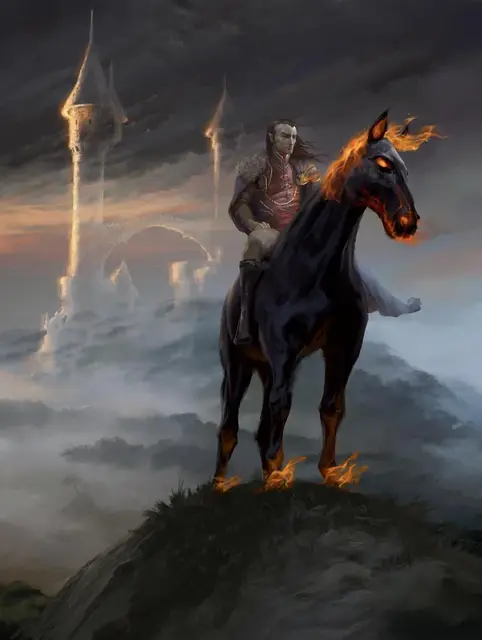

Буцефал
Beucephalus
Большое Исчадие, нейтрально-злое, именной НИП

Класс Доспеха 13 (природный доспех)
Хиты 104 (8к10 + 60)
Скорость 60 футов, летая 90 футов
| мод | спас | ||
|---|---|---|---|
| СИЛ | 18 | +4 | +4 |
| ЛОВ | 15 | +2 | +2 |
| ТЕЛ | 16 | +3 | +3 |
| мод | спас | ||
|---|---|---|---|
| ИНТ | 10 | +0 | +0 |
| МДР | 13 | +1 | +1 |
| ХАР | 15 | +2 | +2 |
Иммунитет к урону огонь
Чувства пассивное Восприятие 11
Языки Общий, Бездны, Инфернальный (понимает, но не говорит)
Опасность 3 (700 опыта)
Бонус мастерства +2
Особенности
Дарование сопротивления огню. Буцефал может предоставить сопротивление урону огнём всем, кто на нем едет.
Свечение. Буцефал испускает яркий свет в радиусе 10 футов и тусклый свет в пределах ещё 10 футов.
Действия
Копыта. Рукопашная атака оружием: +6 к попаданию, досягаемость 5 футов, одна цель. Попадание: 13 (2к8 + 4) дробящего урона плюс 7 (2к6) урона огнём.
Эфирный шаг. Буцефал, а также до трех согласных существ в пределах 5 футов от него, магическим образом переходят на Эфирный План с Материального Плана, или наоборот.
Описание
Кошмар Буцефал – конь Страда. Если герои убивают его, то Страд начинает на них безжалостную охоту.
Кошмар появляется в облаке дыма, его грива, хвост и копыта объяты огнём. Это жуткое чёрное существо двигается со сверхъестественной скоростью, исчезая в облаке серы так же быстро, как появляясь.
Скакун ужаса. Кошмар, которого также называют «демонической» или «адской» лошадью, служит ездовым животным существам невероятного зла, перевозя на себе демонов, дьяволов, рыцарей смерти, личей, ночных карг и других злых чудовищ. Он похож на лошадь, но его огненно-красные глаза выдают в нем его недобрый интеллект.
Кошмар можно призвать из Нижних Планов, но если ему не принесена жертва в качестве еды при появлении, кошмар не демонстрирует особенной верности существу, которому служит.
Создание кошмара. Кошмар не появляется на свет естественным путем. Их делают из пегасов. Ритуал для создания кошмара включает в себя мучительное лишение пегаса крыльев, и при этом их подвергают воздействию темной магии.